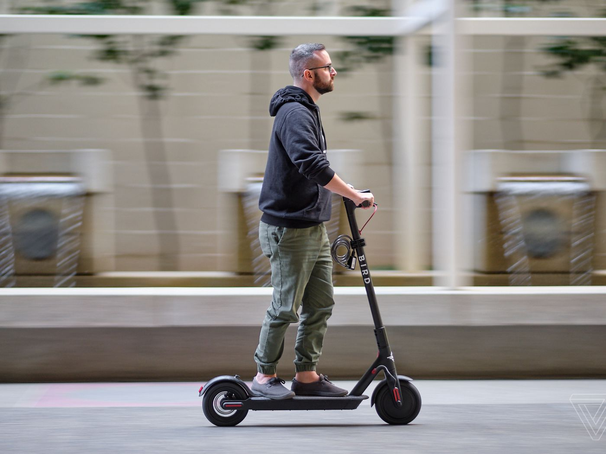
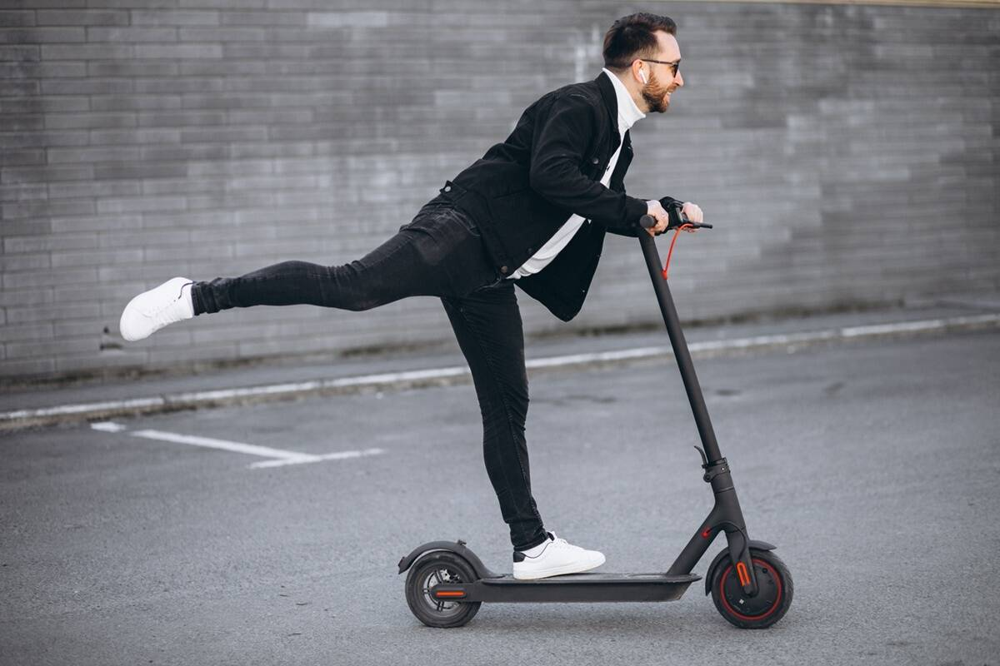

Причины негативного отношения к электросамокатам
Откровенно говоря, самокаты действительно напрягают многих людей - конечно, не сами эти устройства, а люди, которые на них передвигаются с большой скоростью, причем как по тротуару, где пешеход совсем не ждет опасности, так и по проезжей части. "Самокатчики" стали редким (возможно, даже уникальным) явлением, отношение к которому объединяет пешеходов и водителей.
Скорость электросамокатов

Первый и, наверно, самый весомый аргумент противников электросамокатов - это скорость этих транспортных средств. Есть модели, которые разгоняются под 100 км/ч - для сравнения, поезд в московском метро при въезде на станцию имеет скорость всего 50 км/ч. Правда, такие модели дорогие, тяжелые и, главное - не массовые. Впрочем, 30-50 км/ч - вполне среднестатистическая скорость для современного электросамоката. Сломать шею, руки, ноги и чью-то жизнь на такой скорости легче легкого.
И если электросамокаты, доступные для проката, регулируются кикшеринговыми компаниями - их максимальная скорость ограничена 25 км/ч, а в общественных местах и так называемых "медленных зонах" - 15 км/ч, - то личные самокаты не регулируются никак. Однако власти работают над решением этой проблемы: Минпромторг, московская мэрия и институт НАМИ разрабатывают требования для всех ввозимых в Россию электросамокатов, моноколес и гироскутеров. В обязательных требованиях прописана максимальная скорость - 25 км/ч; также внутри должен быть установлен спутниковый чип — чтобы по аналогии с кикшеринговыми моделями, как только самокат заедет в медленную зону, он сбрасывал скорость. Также будут прописаны требования к звуковым сигналам, размеру фар, колесам и другим аспектам такого транспорта.
Неясный статус "самокатчиков"

Также важной причиной недовольства является фактическая безнаказанность людей, использующих электросамокаты, особенно прокатные. Нужно заметить, что основным источником общественного недовольства стали не электросамокаты как вид устройства, а именно пользователи кикшеринга - или "самокатчики". При этом курьеры на велосипедах, которых тоже немало, вызывают куда меньше раздражения, хотя ездят, бывает, даже быстрее, и в аварии тоже попадают. Все же дело скорее в качествах ездоков и их отношении к окружающим.
"Самокатчик" практически ненаказуем. Даже если он устроит аварию на проезжей части или собьет пешехода, он не станет ждать наряда полиции. Если, конечно, сам не пострадает. У него не отберут права, даже если у него есть водительская лицензия. Он может ехать на самокате в нетрезвом виде, и его в лучшем случае оштрафуют за это, как велосипедиста, — на 1-1,5 тыс. рублей.